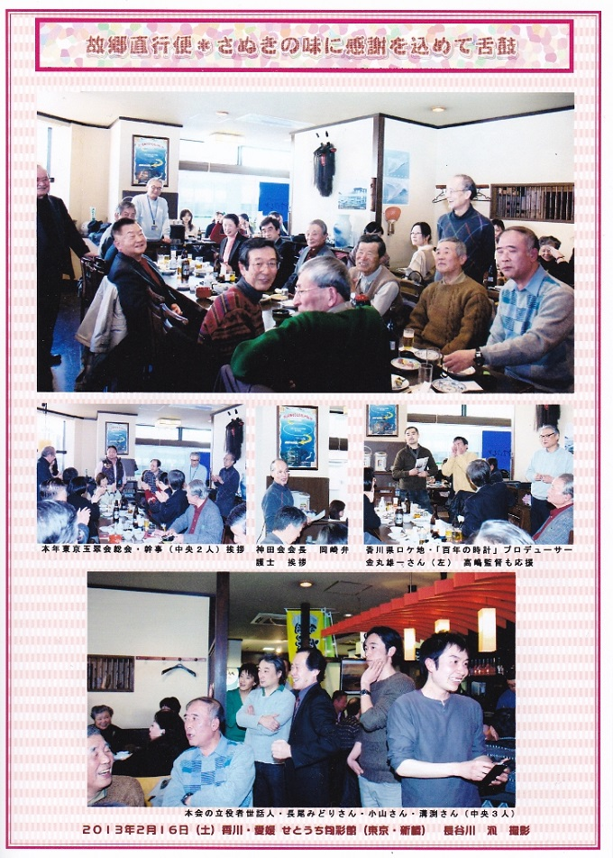
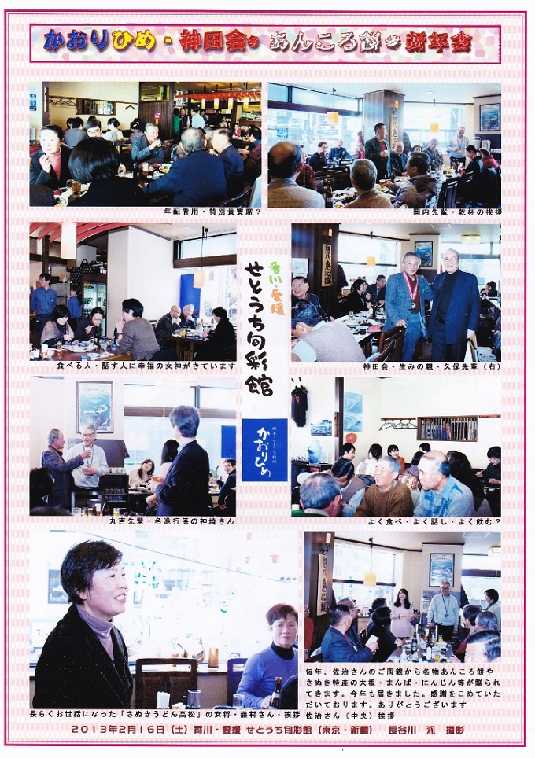
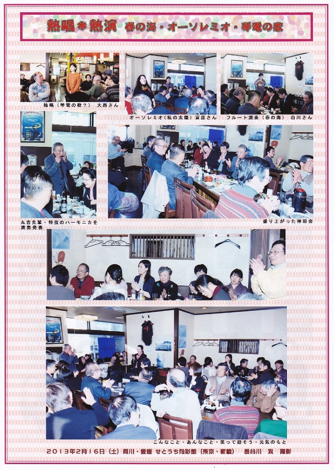
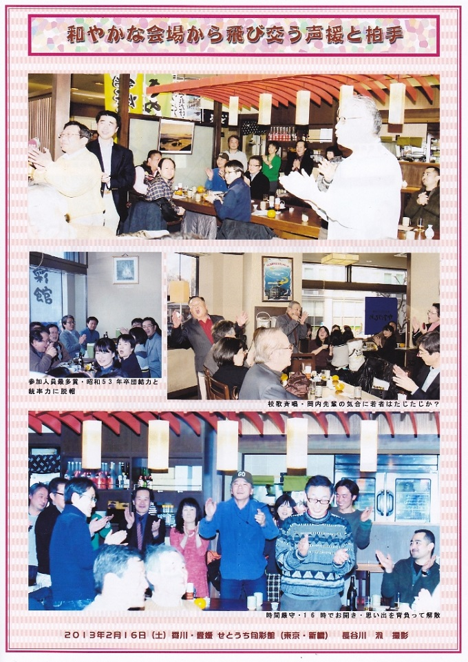

12年前、東京で「白みそあん餅雑煮」がなかなか食べられないという声に応え、高高神田会は「白味噌・あんころ丸餅雑煮会」をスタートさせ、渋谷「讃岐うどん高松」さんには休日にわざわざ店を開けて協力をいただいていました。
しかし、昨年(2012年)10月閉店になりました。
もはや東京で正当な讃岐食文化を食することは困難かと思われましたが、「せとうち旬彩館かおりひめ」の溝渕さん（高高OB）から「なんとかやってみよう」という有難いお申し出を頂き、装いも新たに「白味噌餡餅雑煮を楽しむ会」を開催することができました。



